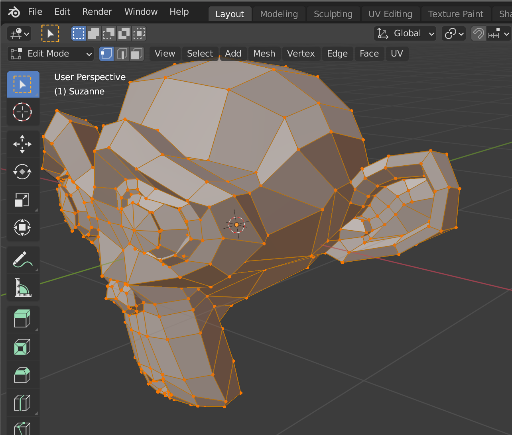
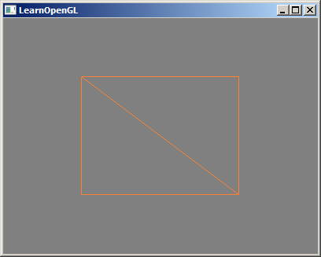

你好 四边形
在上一个章节我们已经可以绘制三角形，并且使用的是下面的代码。
GL.DrawArrays( GL.GL_TRIANGLES, // 以三角形方式绘制平面 0, // 开始位子 3 // 一共有3个顶点 );
那么问题来了，要绘制一个四边形怎么办？使用下面的代码？
GL.DrawArrays(GL.GL_QUADRILATERALS, 0, 4);
你简直就是一个大聪明，那么五边形六边形N边形怎么办？而且并没有GL_QUADRILATERALS这个常量，仅有一个GL_QUADS，并且在OpenGL的文档中这样描述的：Compatibility-only GL 1.1 features removed from GL 3.2
三角形与四边形
不知道你是否听说过一句话：建模四边面，渲染三角形
上图是在Blender中一个自带的猴子模型。可以看到它几乎由四边形组成。在3D建模过程中应当尽可能的使用四边形构建模型，如果你有3D建模的经验，那你应该很清楚为什么。
但是四边形其实并不利于渲染的，而三角形才是最符合渲染的结构。为什么？因为三角形是构成平面的最低要求，三个顶点一定是在一个平面上的，而四个或以上的顶点数据则不一定是在平面上，渲染时候会带来一些额外的运算，并且一些渲染引擎直接只采用三角形渲染。也就是为什么有些游戏开发，在建模软件中的模型到了游戏中会有一些不一致的原因。
这就是为什么我们总是使用GL_TRIANGLES的原因，而不是其它的。
构建四边形
那么现在回到如何绘制一个四边形的问题上。现在你已经知道了我们是以三角形绘制的，绘制一个四边形则需要两个三角形组成。
float[] vertices = { -0.5f, -0.5f, 0.0f, // 第一个顶点 0.5f, -0.5f, 0.0f, // 第二个顶点 -0.5f, 0.5f, 0.0f, // 第三个顶点 -0.5f, 0.5f, 0.0f, // 第一个顶点 0.5f, -0.5f, 0.0f, // 第二个顶点 0.5f, 0.5f, 0.0f // 第三个顶点 }; //====================== GL.DrawArrays( GL.GL_TRIANGLES, 0, 6 // 一共有6个顶点 );
上面的代码的确也可以帮我们绘制出一个四边形，但是仔细想想，四边形明明只有4个顶点，我们却需要构造6个顶点数据，而且其中两个还是重复的。这是不是有点浪费？如果是一个很大的模型这还得了？能否值构造4个顶点数据？
EBO
没错还记得上一章提到的EBO（Element Buffer Object）吗？EBO是一个缓冲区，就像一个顶点缓冲区对象一样，它存储OpenGL用来决定要绘制哪些顶点的索引。这种所谓的索引绘制(Indexed Drawing)正是我们问题的解决方案。首先，我们先要定义（不重复的）顶点，和绘制出矩形所需的索引：
float[] vertices = { -0.5f, 0.5f, 0.0f, // 左上角 0.5f, 0.5f, 0.0f, // 右上角 0.5f, -0.5f, 0.0f, // 右下角 -0.5f, -0.5f, 0.0f, // 左下角 }; uint[] indices = { 0, 3, 2, // 第一个三角形 0, 2, 1 // 第二个三角形 };
indices中保存的是在vertices中的索引数据。
默认情况下逆时针表示正面，顺时针表示反面。OpenGL是一个三维的世界，平面是有正面和反面的。
EBO和VBO的创建非常相似。
uint ebo = GL.GenBuffers(); GL.BindBuffer(GL.GL_ELEMENT_ARRAY_BUFFER, ebo); GL.BufferData(GL.GL_ELEMENT_ARRAY_BUFFER, indices, GL.GL_STATIC_DRAW);
我们可以在创建VBO之后创建EBO，接下来需要做一下改变，将glDrawArrays换成glDrawElements。
GL.DrawElements( GL.GL_TRIANGLES, 6, // 6个顶点 GL.GL_UNSIGNED_INT, // 索引是uint类型 IntPtr.Zero // 没有偏移 );
当我们绑定EBO后的VAO是这个样子的。

一个VAO只能有一个EBO。glDrawElements会去检测当前VAO的EBO并获取数据。
线框模式
当然上面的看上去是一个四边形其实是两个三角形组合而成的。如果我们使用线框模式绘制就能看到两个三角形。
我们可以在一开始就修改OpenGL的状态，让绘制的模式变成线框模式（Wireframe Mode）。
GL.PolygonMode(GL.GL_FRONT_AND_BACK, GL.GL_LINE);
要想用线框模式绘制你的三角形，你可以通过glPolygonMode(GL_FRONT_AND_BACK, GL_LINE)函数配置OpenGL如何绘制图元。第一个参数表示我们打算将其应用到所有的三角形的正面和背面，第二个参数告诉我们用线来绘制。之后的绘制调用会一直以线框模式绘制三角形，直到我们用glPolygonMode(GL_FRONT_AND_BACK, GL_FILL)将其设置回默认模式。
正面与反面
在上面提到过，平面是有正面和反面的。而你也看到了GL_FRONT_AND_BACK这个值。OpenGL在默认情况下以逆时针向的点构成的平面为正面。我们可以使用glEnable(GL_CULL_FACE)来开启剔除平面。然后告诉OpenGL我们需要剔除正面还是背面，被剔除的平面不会参与绘制。
加入以下代码后运行程序你会发现什么都没有绘制。
GL.Enable(GL.GL_CULL_FACE); // 开启平面剔除功能 GL.CullFace(GL.GL_FRONT); // 剔除正面
因为上面我们indices指定的点的顺序全部都是逆时针的，所以全部都是正面，所以全部被剔除了。当然我们也可以告诉OpenGL顺时针才是正面。
GL.FrontFace(GL.GL_CW); // 顺时针是正面 GL.FrontFace(GL.GL_CCW); // 逆时针是正面
总结
在原版的教程中是并没有你好 四边形的，而是将此章节的内容合并在了你好 三角形中，因为原版教程希望在一个章节中介绍VAOVBOEBO，而介绍EBO需要四边形的案例，作者个人认为这样会很混乱，所以分开了，并在这里做总结。
一个绘制过程我们需要做如下准备：
- VAO（Vertex Array Object）
- VAO是OpenGL绘制的基本单元，是必须的。在数据处理之前我们应当优先创建VAO并绑定到当前的Context中，因为之后的操作都将在此VAO上进行，没有正确的设置VAOOpenGL是不会产生任何绘制的。
- VBO（Vertex Buffer Objec）
- VBO用于保存数据，并且需要通过glVertexAttribPointer指定数据的获取规则绑定到VAO的attribute pointer上与Shader做关联。
- EBO（Element Buffer Object）
- EBO并不是必须的，在没有使用EBO的情况下，我们需要通过glDrawArrays去绘制，但是如果平面有大量重复顶点的时候我们应当使用EBO，并且使用glDrawElements进行绘制。
class _1_5_Hello_Quadrilateral { private static string m_str_vertex_shader = @" #version 330 core layout (location = 0) in vec3 dotPos; void main(){ gl_Position = vec4(dotPos, 1.0); }"; private static string m_str_fragment_shader = @" #version 330 core out vec4 fragColor; void main(){ fragColor = vec4(1.0, 0.5, 0.2, 1.0); }"; public static void Run() { GLFW.Init(); GLFW.WindowHint(GLFW.CONTEXT_VERSION_MAJOR, 3); GLFW.WindowHint(GLFW.CONTEXT_VERSION_MINOR, 3); GLFW.WindowHint(GLFW.OPENGL_PROFILE, GLFW.OPENGL_CORE_PROFILE); if (RuntimeInfo.System == RuntimeInfo.SystemType.Mac) { GLFW.WindowHint(GLFW.OPENGL_FORWARD_COMPAT, GL.GL_TRUE); // For Mac system } IntPtr window = GLFW.CreateWindow(400, 300, "LearnOpenGL", IntPtr.Zero, IntPtr.Zero); if (window == IntPtr.Zero) { Console.WriteLine("Failed to create GLFW window"); GLFW.Terminate(); return; } GLFW.MakeContextCurrent(window); GLFW.SetFramebufferSizeCallback(window, framebuffer_size_callback); try { GL.Init(GLFW.GetProcAddress); } catch (Exception ex) { Console.WriteLine(ex.Message); GLFW.Terminate(); return; } int nWidth = 0, nHeight = 0; GLFW.GetFramebufferSize(window, ref nWidth, ref nHeight); GL.Viewport(0, 0, nWidth, nHeight); //==================================== //GL.Enable(GL.GL_CULL_FACE); //GL.CullFace(GL.GL_FRONT); //GL.FrontFace(GL.GL_CW); //GL.PolygonMode(GL.GL_FRONT_AND_BACK, GL.GL_LINE); float[] vertices = { -0.5f, 0.5f, 0.0f, // 左上角 0.5f, 0.5f, 0.0f, // 右上角 0.5f, -0.5f, 0.0f, // 右下角 -0.5f, -0.5f, 0.0f, // 左下角 }; uint[] indices = { 0, 3, 2, // 第一个三角形 0, 2, 1 // 第二个三角形 }; uint vao = GL.GenVertexArrays(); GL.BindVertexArray(vao); uint vbo = GL.GenBuffers(); GL.BindBuffer(GL.GL_ARRAY_BUFFER, vbo); GL.BufferData(GL.GL_ARRAY_BUFFER, vertices, GL.GL_STATIC_DRAW); GL.VertexAttribPointer(0, 3, GL.GL_FLOAT, false, 3 * sizeof(float), IntPtr.Zero); GL.EnableVertexAttribArray(0); uint ebo = GL.GenBuffers(); GL.BindBuffer(GL.GL_ELEMENT_ARRAY_BUFFER, ebo); GL.BufferData(GL.GL_ELEMENT_ARRAY_BUFFER, indices, GL.GL_STATIC_DRAW); var vertexShader = GL.CreateShader(GL.GL_VERTEX_SHADER); GL.ShaderSource(vertexShader, m_str_vertex_shader); GL.CompileShader(vertexShader); int nFlag = GL.GetShaderiv(vertexShader, GL.GL_COMPILE_STATUS); if (nFlag == 0) { int nLen = 0; byte[] byBuffer = new byte[1024]; GL.GetShaderInfoLog(vertexShader, byBuffer.Length, ref nLen, ref byBuffer[0]); GL.DeleteShader(vertexShader); string strError = Encoding.UTF8.GetString(byBuffer, 0, nLen); throw new GLShaderCompileException(strError); } var fragmentShader = GL.CreateShader(GL.GL_FRAGMENT_SHADER); GL.ShaderSource(fragmentShader, m_str_fragment_shader); GL.CompileShader(fragmentShader); nFlag = GL.GetShaderiv(fragmentShader, GL.GL_COMPILE_STATUS); if (nFlag == 0) { int nLen = 0; byte[] byBuffer = new byte[1024]; GL.GetShaderInfoLog(fragmentShader, byBuffer.Length, ref nLen, ref byBuffer[0]); GL.DeleteShader(fragmentShader); string strError = Encoding.UTF8.GetString(byBuffer, 0, nLen); throw new GLShaderCompileException(strError); } var program = GL.CreateProgram(); GL.AttachShader(program, vertexShader); GL.AttachShader(program, fragmentShader); GL.LinkProgram(program); nFlag = GL.GetProgramiv(program, GL.GL_LINK_STATUS); if (nFlag == 0) { int nLen = 0; byte[] byBuffer = new byte[1024]; GL.GetProgramInfoLog(program, byBuffer.Length, ref nLen, ref byBuffer[0]); GL.DeleteProgram(program); string strError = Encoding.UTF8.GetString(byBuffer, 0, nLen); throw new GLProgramLinkException(strError); } GL.UseProgram(program); GL.DeleteShader(vertexShader); GL.DeleteShader(fragmentShader); //==================================== while (!GLFW.WindowShouldClose(window)) { processInput(window); GL.ClearColor(.5f, .5f, .5f, 1f); GL.Clear(GL.GL_COLOR_BUFFER_BIT); // GL.BindVertexArray(vao); GL.DrawElements(GL.GL_TRIANGLES, 6, GL.GL_UNSIGNED_INT, IntPtr.Zero); GLFW.SwapBuffers(window); GLFW.WaitEvents(); } GLFW.Terminate(); } static void processInput(IntPtr window) { if (GLFW.GetKey(window, GLFW.KEY_ESCAPE) == GLFW.PRESS) GLFW.SetWindowShouldClose(window, true); } static void framebuffer_size_callback(IntPtr window, int width, int height) { GL.Viewport(0, 0, width, height); } }